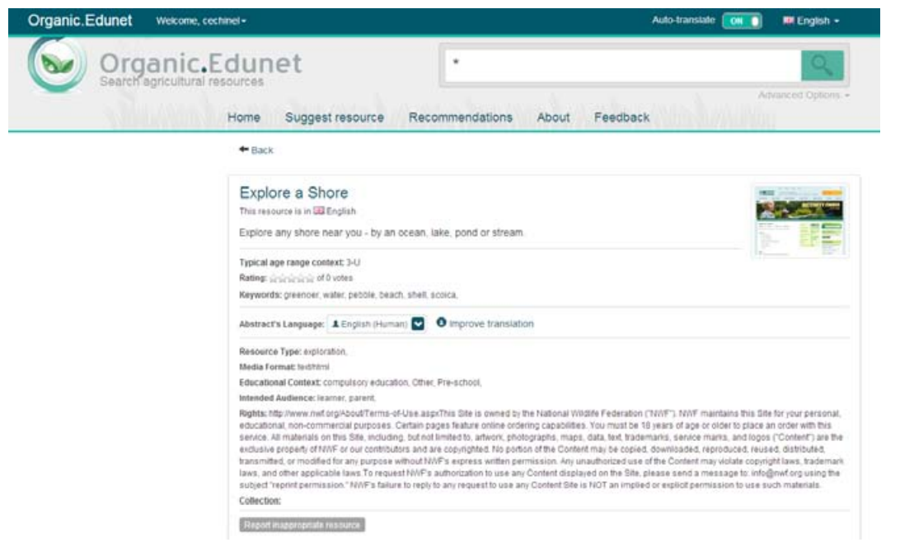

Organic.Edunet
O Organic.Edunet portal.organic-edunet.eu é uma federação de repositórios financiada pela União Europeia e focada exclusivamente em conteúdos relacionados a Agricultura e Agroecologia Orgânica. Apesar de ser um repositório relativamente novo (lançado em 2009), ele já possui aproximadamente 2.500 usuários e 11.000 recursos.
No Organic.Edunet, a qualidade é garantida pela comunidade de usuários, que possui permissão para pontuar os recursos e melhorar as traduções dos metadados (o portal é multilíngue, a interface é disponbilizada em nove idiomas).
Ainda, qualquer usuário pode dar sua opinião direta sobre um dado recurso do portal, assim como relatar conteúdos inapropriados.
